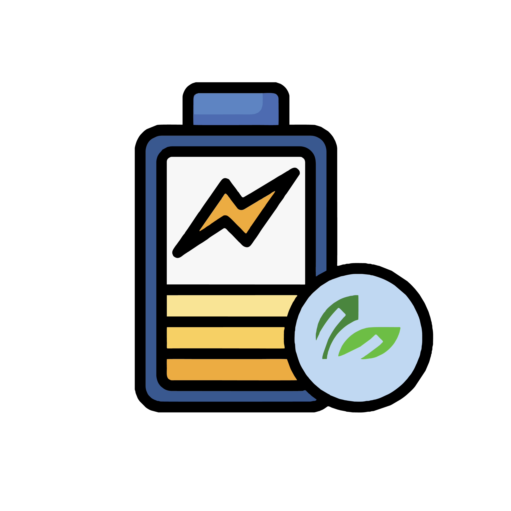
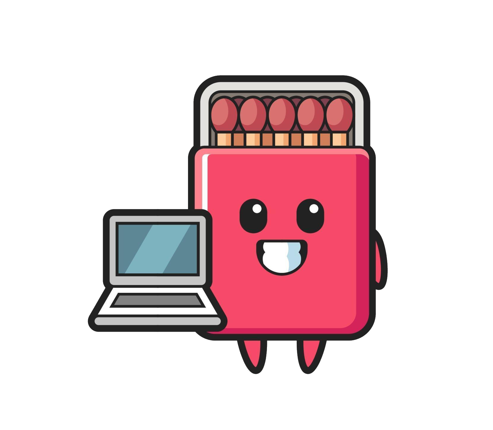
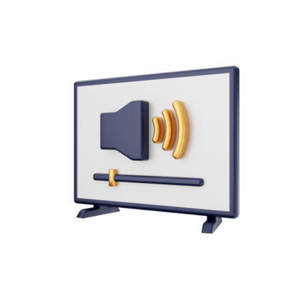

آموزشهای موبایل و تبلت
چرا باتری گوشی من زود تمام میشود؟ (راهکارهای افزایش عمر باتری)
آخرین بهروزرسانی: ۱۴۰۲/۰۵/۲۰

مشکل رایج:
کاهش عمر باتری و نیاز به شارژ مکرر یکی از شایعترین مشکلات کاربران موبایل است. پس از ۱-۲ سال استفاده، بسیاری از کاربران متوجه کاهش چشمگیر عمر باتری میشوند.
دلایل اصلی:
- استفاده از شارژرهای غیراستاندارد
- شارژ کردن گوشی تا ۱۰۰% و تخلیه کامل آن
- فعال بودن دائمی وایفای، بلوتوث و موقعیتیاب
- وجود برنامههای در حال اجرا در پسزمینه
- گرمای بیش از حد دستگاه
راهکارهای عملی:
- تنظیم روشنایی صفحه: روشنایی خودکار را فعال کنید یا آن را روی ۵۰-۶۰% تنظیم نمایید.
- مدیریت برنامههای پسزمینه: در تنظیمات باتری، برنامههای پر مصرف را شناسایی و محدود کنید.
- شارژ هوشمند: گوشی را بین ۲۰% تا ۸۰% شارژ نگه دارید. شارژ کامل مکرر به باتری آسیب میزند.
- حالت صرفهجویی باتری: در مواقعی که به تمام قابلیتها نیاز ندارید، این حالت را فعال کنید.
- بهروزرسانی نرمافزار: همیشه آخرین نسخه سیستم عامل را نصب کنید.
هشدار: اگر پس از انجام این راهکارها مشکل باتری ادامه داشت، ممکن است نیاز به تعویض باتری باشد. برای تعویض باتری اصلی با ما تماس بگیرید.
گوشی من در آب افتاد! چه کار کنم؟ (راهنمای کامل نجات گوشی آب خورده)
آخرین بهروزرسانی: ۱۴۰۲/۰۴/۱۵

اقدامات فوری (۲۴ ساعت اول):
- فوراً گوشی را از آب خارج کنید و آن را خاموش نمایید.
- اگر باتری قابل جدا شدن است، آن را خارج کنید.
- سیم کارت و کارت حافظه را خارج نمایید.
- با یک پارچه نرم و جاذب آب سطح خارجی را خشک کنید.
- هرگز از سشوار استفاده نکنید! گرمای مستقیم آسیبزا است.
- گوشی را در یک ظرف پر از برنج خشک یا سیلیکاژل قرار دهید (حداقل ۲۴ ساعت).
پس از ۲۴ ساعت:
- گوشی را روشن کنید. اگر روشن نشد، آن را شارژ کنید.
- اگر مشکل ادامه داشت، فوراً به متخصص مراجعه کنید.
- هرگز گوشی را قبل از خشک شدن کامل شارژ نکنید.
نکته پیشگیرانه: برای جلوگیری از آسیب آب، از قابها و محافظهای ضد آب استفاده کنید یا گوشیهای با استاندارد IP68 خریداری نمایید.
آموزشهای لپتاپ و کامپیوتر
لپتاپ من خیلی داغ میکند! راهحل چیست؟
آخرین بهروزرسانی: ۱۴۰۲/۰۵/۱۰

دلایل گرمایش بیش از حد:
- تجمع گرد و غبار در فنها و دریچههای هوا
- خشک شدن خمیر حرارتی پردازنده
- استفاده از لپتاپ روی سطوح نرم مانند مبل یا تخت
- اجرای برنامههای سنگین برای مدت طولانی
- خرابی سیستم خنککننده
راهکارهای کاهش دما:
1
تمیز کردن دریچهها
با استفاده از هوای فشرده (نه جاروبرقی!) گرد و غبار دریچهها را پاک کنید.
2
استفاده از پایه خنککننده
پایههای خنککننده با فن میتوانند دمای لپتاپ را ۵-۱۰ درجه کاهش دهند.
3
تعویض خمیر حرارتی
هر ۲-۳ سال خمیر حرارتی پردازنده و کارت گرافیک را تعویض کنید.
هشدار: اگر پس از انجام این راهکارها لپتاپ همچنان داغ میکند، ممکن است مشکل از فن یا مدارهای قدرت باشد که نیاز به تعمیر تخصصی دارد.
آموزشهای دیگر دستگاههای دیجیتال
تلویزیون من تصویر دارد اما صدا ندارد - راهحلهای ساده
آخرین بهروزرسانی: ۱۴۰۲/۰۳/۲۸

مراحل عیبیابی:
- اول مطمئن شوید تلویزیون روی حالت بیصدا (Mute) نیست.
- کابل HDMI یا AV را بررسی کنید. ممکن است مشکل از اتصالات باشد.
- منبع صدا را تغییر دهید (مثلاً از HDMI1 به HDMI2 بروید).
- تلویزیون را ریست فکتوری کنید (در تنظیمات سیستم).
- اگر از اسپیکر خارجی استفاده میکنید، اتصالات آن را بررسی نمایید.
اگر راهکارهای بالا جواب نداد:
- ممکن است مشکل از برد صدا باشد که نیاز به تعمیر دارد.
- در برخی مدلها، خازنهای برد صدا معیوب میشوند که قابل تعویض هستند.
- در موارد نادر، مشکل از پنل اصلی است که تعمیر آن مقرون به صرفه نیست.
پیشنهاد راچار: قبل از اقدام برای تعویض تلویزیون، با کارشناسان ما تماس بگیرید. در بسیاری موارد مشکل با هزینه کم قابل حل است.